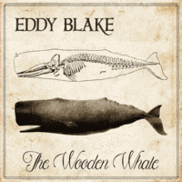

Eddy Blake - The Wooden Whale (Album, 2016)
01 - The Titan (2:33)
02 - Low Down To The Ground (2:48)
03 - All I Can Do Is Cry (2:00)
04 - As Tears Goes By (2:16)
05 - Love Floats Away (2:50)
06 - Leviathan (3:12)
07 - Dream Of A Miner's Daughter (2:05)
08 - Drink Up And Go Home (2:32)
09 - I Love Everyone (3:20)
© Eddy Blake :: [Digital]
Notes
Montreal, Canada.
Performed by Eddy Blake Eaton
Additional vocal on track four by Hannah Lewis
Songs are written-by (here and further: or credited to) Eaton: "The Titan", "Low Down To The Ground", "Love Floats Away", "Leviathan", "I Love Everyone"
Song is written-by Walker: "All I Can Do Is Cry"
Song is written-by Jagger/Richards: "As Tears Goes By"
Song is written-by Jenkins: "Dream Of A Miner's Daughter"
Song is written-by Bond/Maphis: "Drink Up And Go Home"
Recorded, mixed and mastered by Sebastien Perry
reference information: Discogs®
Review
310/366 (Project 366)
Country Rock with an experimental base, folk tone, classical mood and rockabilly groove. Maybe it is symphonic country music. Maybe a dedication to the double bass.
"The Titan" is a great instrumental song to start the album with and so catchy. A galloping and slapping tune, then with a somewhat ethno-folk sound - astonishing, charming and even titanic indeed. Sweeping, groovy but with a very stubborn rhythm. The second track "Low Down To The Ground" continues such a heavy, bass motive but with a more melodic tone and wonder vocals. Quite a beautiful thing, only the accented flute is missing for a complete cosmic hit. But that is beyond the scope of this Eddie Blake project. Then the first cover song comes in, "All I Can Do Is Cry". I think that never heard such a marvelously explosive version. It's just something! The next cover song ("As Tears Goes By") is performed in a more conceptual form, somewhat pop and high emotional composition with very atmospheric female backing vocals. The fifth song "Love Floats Away" is again the artist's own. Maybe that is why it reminds of the first instrumental track, but there is also epic sentimental singing. It actually looks like a bit of a ballad, sea shanty song. The next track "Leviathan" starts out so cool and also resembles the previous track and the first one - but with such a rhythm and so superfine instrumental tune. An excellent work! Then there are two cover versions, in principle, of Country songs. The first is a spirited composition with its Rustic Folk background - "Dream Of A Miner's Daughter". And a very contrasting change of mood with "Drink Up And Go Home" version afterward, another rustic song with relatively tragically filled feelings. The album ends with a somewhat interesting self-penned song, "I Love Everyone". Retains the general style of the tracks, but adds a bit of relatively garage rockin' and rollin'. Not crazy sound, but just frank.
This is a rather peculiar work of Eddy Blake, who is known for many good projects and participation in Canadian bands. But I found these recordings to be pretty revealing of many features. First, always a classy approach. Secondly, the skillful use of simple raw sound. And also a kind of lyricism, artistry and groove. And also a rather special and somewhat unique desire to highlight his favorite styles and genres. Lastly, I can say that I was very surprised by the sound and wanted to know how it was recorded. So, according to his bandcamp page - "... multiple double basses are overdubbed together to create a rich texture of harmony, melody and rhythm, using the bass as both a solo and accompanying instrument...". Magic around. "The Wooden Whale", what else to say.